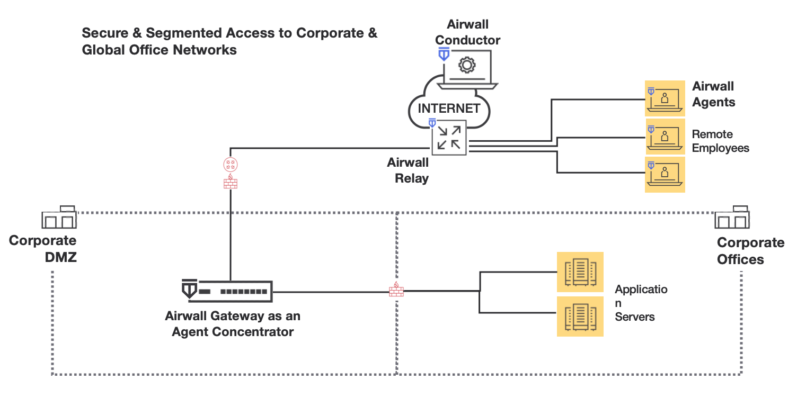

What makes up an Airwall secure network?
Get an overview of what goes into creating an Airwall secure network, a virtual air-gap solution that ensures your devices are completely invisible. You can secure and micro-segment network communication and remote access between devices at scale. The architecture also makes it possible to deploy and install an Airwall secure network over your existing network.
In an Airwall secure network, devices are assigned a cryptographic identity using Host Identity Protocol (HIP) as the sole criteria for network communications. By default, devices only communicate through the encrypted identity framework, which means devices don’t even show up on a pen-test scan.
Rather than finding a metaphorical ‘locked door,’ there is no door to even knock on. From the perspective of a pen tester or bad actor, the network is essentially invisible.
Here is a simplified view of an Airwall secure network:

Airwall Agents, Servers, Gateways, and Relays, collectively Airwall Edge Services, are a collection of services that allow you to connect and protect all of your things. The Airwall Conductor provides an intuitive interface for you to manage your Airwall solution.
- Airwall Agent software protects and connects your employees mobile devices and laptops.
- Airwall Server software protects and connects your Windows and Linux servers.
- Airwall Gateways protect your devices - cameras, manufacturing, utility or hospital devices, and are available as hardware, cloud, and virtual appliances.
- Airwall Relays connect all of your things together, regardless of the way they are connecting. They route encrypted communications between all your ‘things’, without modifying the underlying network. Airwall Relays can be hardware, cloud, or virtual as well.
- The Airwall Conductor is an interface that allows you to set up and manage all of the above Airwall products and how they interact to create your Airwall secure network.
- Airwall Overlays create the connections and trust policies between these Airwall Edge Services. When you build an Overlay, you are connecting and establishing trust between two or more Airwall Edge Services.
More information on each of these is below.
Airwall Agents
Airwall Agents are software applications installed on devices (Windows, macOS, iOS, iPadOS, and Android) that enable zero-trust network access (ZTNA) from anywhere in the world. By default, all communications are encrypted end-to-end and multi-factor authenticated (MFA), enforcing a software-defined perimeter (SDP) at the distributed edge.
Easily integrate user authentication with device-based authentication, overcoming much of the complexity associated with extending directory services to include device-based trust. Explicitly allow or deny any device to securely connect to a network, and also easily segment access by defining resources that a device or group of devices can access. Devices do not have the session constraints and are not restricted by the number of concurrent client-to-resource encrypted sessions.
Airwall Servers
Airwall Servers support Windows Server and Linux, and behave much like Airwall Agents. They effectively make servers invisible and only allow communication with authenticated and authorized endpoints (ZTNA). Air-gap servers from unauthorized communication with a software-defined perimeter (SDP).
Airwall Gateways
Airwall Gateways protect ‘things’ downstream. They are deployed in front of devices or hosts that cannot protect themselves. Examples include legacy systems and machines, or when customers are unable to install an Airwall Agent or Server.
Physical Airwall Gateways, depending on the model, have built-in Ethernet, Wi-Fi, and Cellular (2G, 3G, 4G LTE modems), as well as Serial-over IP for the flexible link connectivity options. You can also deploy virtual and cloud Airwall Gateways.
Virtual Airwall Gateways use the 300v image and license. See Virtual Airwall Edge Services.
Airwall Relays
An Airwall Relay routes encrypted communications between all your ‘things’ across all of your networks. You can use them to reduce network complexity and enable complete connectivity between every endpoint. An Airwall Relay provides a private identity namespace that eliminates the need for public IP addresses and inbound firewall rules to connect devices.
Instead of Layer 3 rules, network addresses, or traditional routing protocols to securely connect and route privately addressed systems across networks, Airwall Relay relies on verifiable cryptographic identities to determine if a connection is allowed, and forwards only authenticated and encrypted traffic to authorized endpoints. You can deploy an Airwall Relay as a physical, virtual, or cloud device.
Airwall Conductor
The Conductor provides one centralized location for you to set up and manage Airwall products and create your Airwall secure network:
- Set up, provision, license, and manage all Airwall Edge Services.
- Manage the devices protected by Airwall Edge Services.
- Connect and set up trust relationship policies between the Airwall Edge Services with Overlays. You define the overlay network segments and systems that protected machines are allowed to access, as well as how they connect on the LAN, WAN, and public Internet.
- Monitor and troubleshoot your Airwall secure network.
The Conductor enforces visibility and access policy based on unchanging cryptographic machine identities, not network addresses that change and can be spoofed. It is not involved in the data that is exchanged between Airwall Edge Services and the devices they protect.
Airwall Overlays
When you build an Overlay, you are connecting and establishing trust between two or more Airwall Edge Services. Every endpoint in an Overlay knows the IP-layer state of its peers, and every peer maintains identity-based routing tables. This policy-based approach helps any edge service establish the most direct route to a resource within an Overlay.
The secured communications channels you create with an Overlay are encrypted HIP tunnels that allow trusted devices to communicate securely with each other across the network. These communication channels are controlled by the Airwall Edge Services deployed throughout the underlay and administered by the Conductor.
Underlay
This is your existing network. Airwall Edge Services (Gateways, Agents, and Servers) and the Conductor connect to the underlay over which you establish the Airwall secure network.